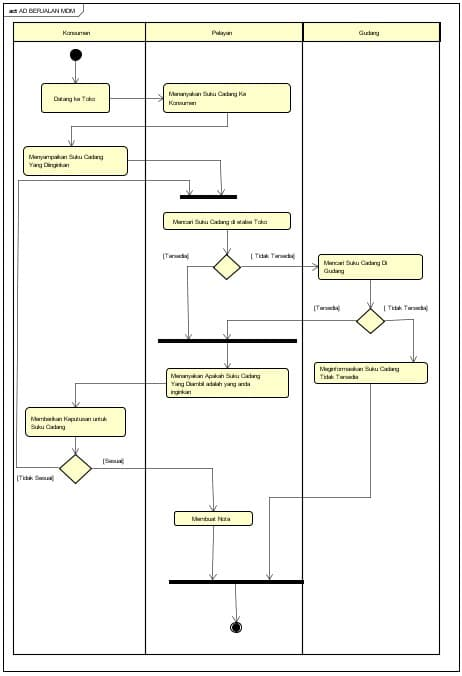

Nim : 1811500086
Nama : Muhammad Dafi Mahendra
Kelompok : TI6A
Pembahasan Analisa pada Kegiatan atau Activity bisnis Pemesanan/penjualan
Tentukan Dimana Kegiatan akan dibuat ?
Cari masalah yang dibuat pada Kegiatan atau Activity pada Proses Transaksi ?
Membuat sistem yang menghemat waktu bagi pemilik dan konsumen !
Memperkecil kesalahan pada data yang dimasukan atau dikeluarkan !
Mempelajari Activity Diagram
Beberapa Refrensi Lain :
Activity Diagram dari Creatly : Tutorial Activity Diagram
Activity Diagram Dari BSN : Activity Diagram
Activity Diagram Dari UML Diagrams : Activity Diagrams Examples
Catatan : Seperti biasa Setidaknya mengerti Bahasa Inggris Jika Ingin Digunakan
Analisis Sistem Berjalan terkait dengan Proses yang di analisa pada suatu toko
Membuat Activty Diagram
Materi Activity Pertemuan 2
menurut Activity Diagram adalah membuat sebuah Rancangan Yang mengambarkan Sebuah Kegiatan yang ingin dilakuan dengan menemukan masalah-masalah yang mungkin terjadi dengan berbagai penyelesaian
Pekerjaan File Astah : Download
Image/ Foto Dari Pekerjaan Yang Dibuat

Copyright © 2021 RSCR4MDM . All rights reserved.